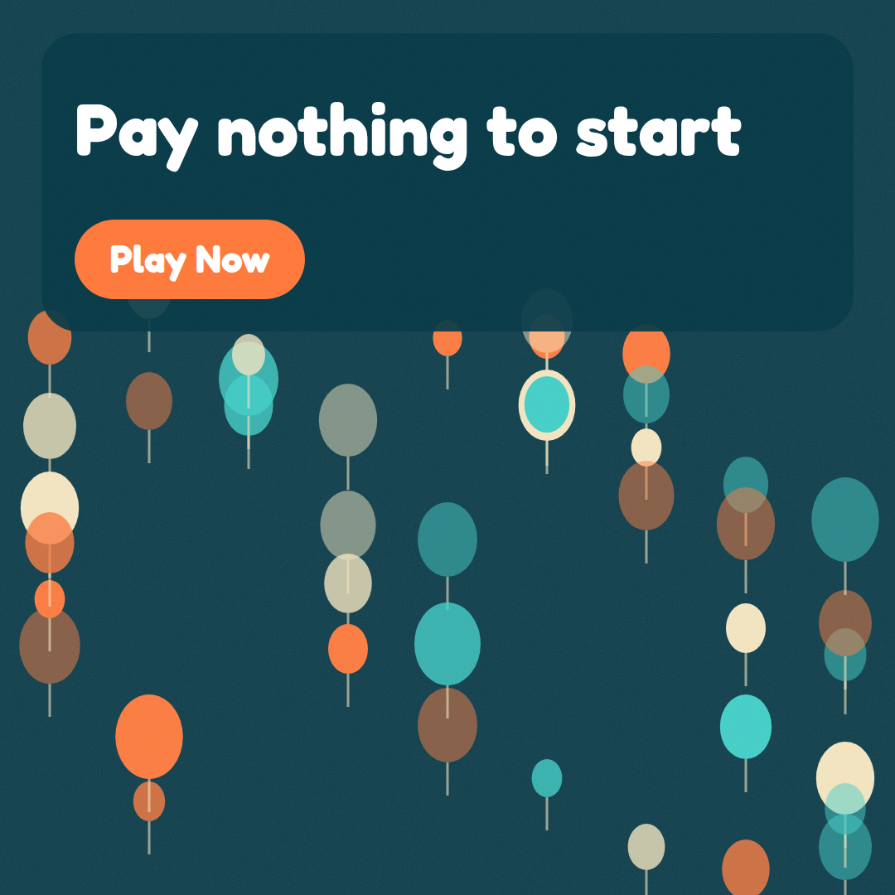
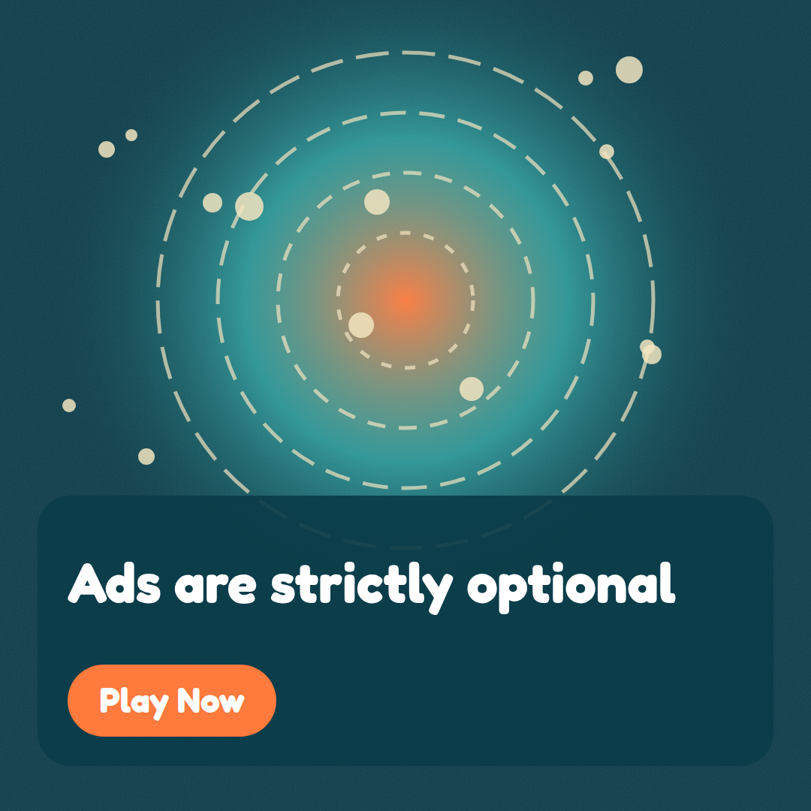
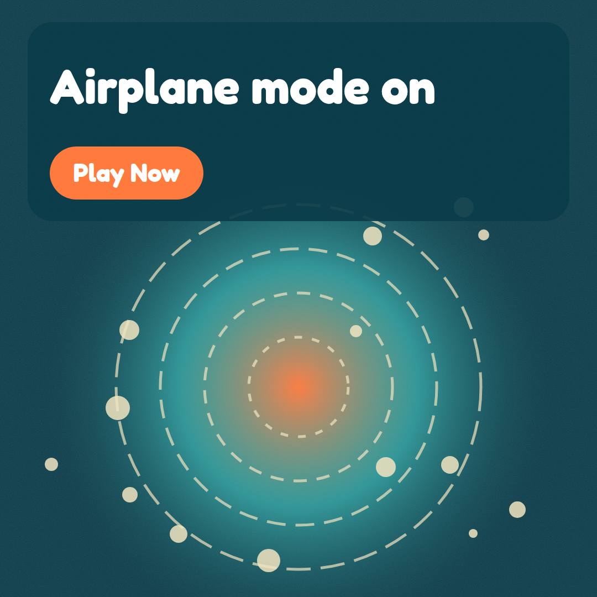
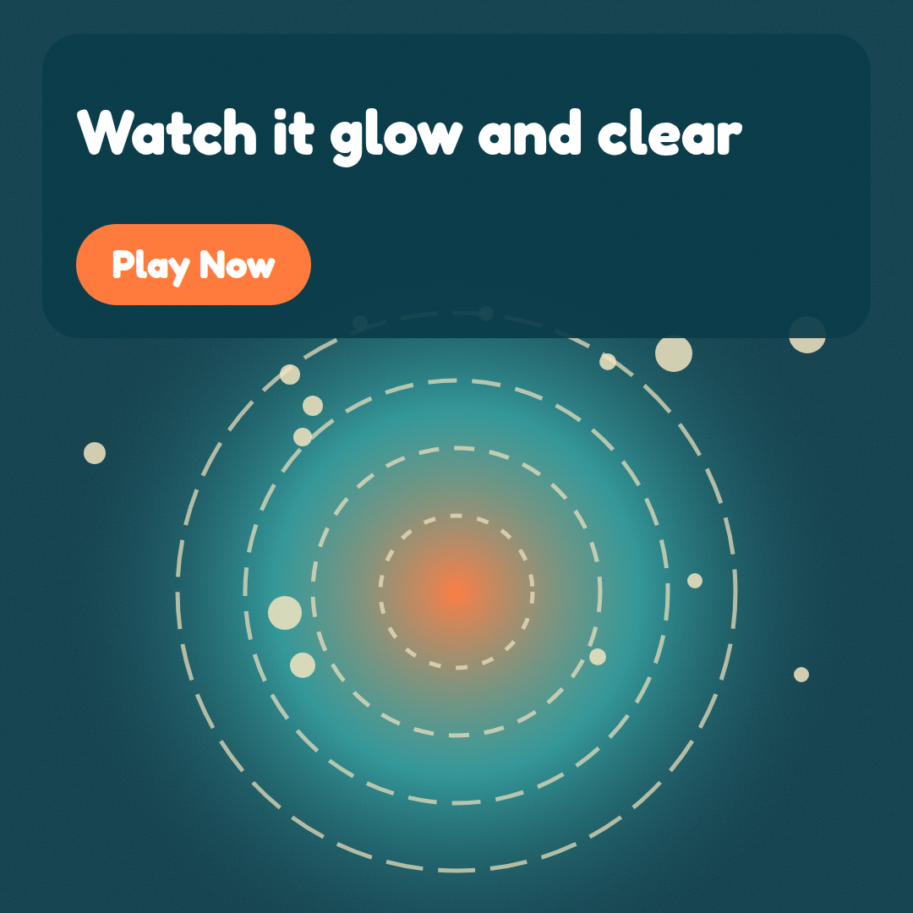
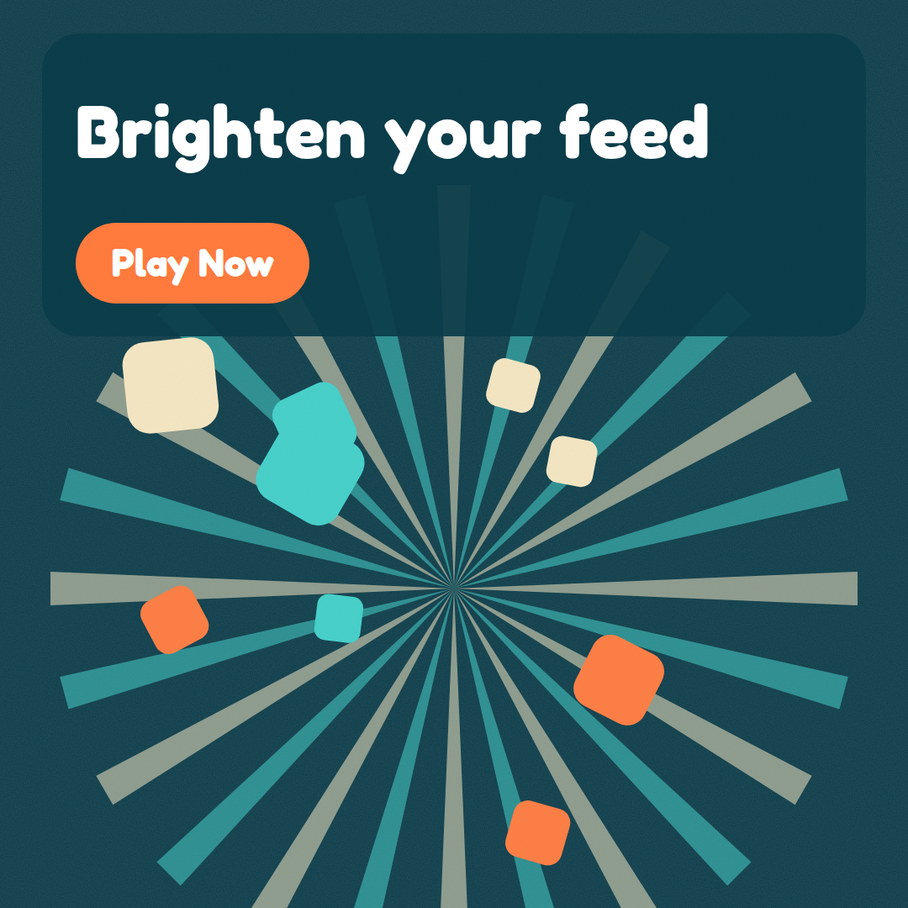
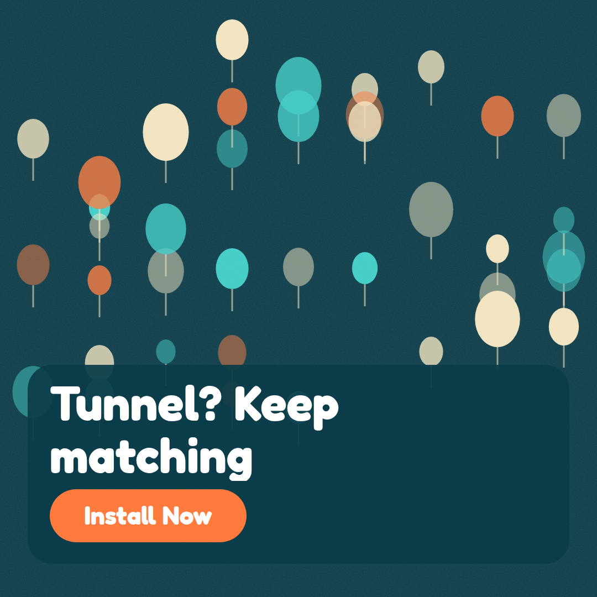
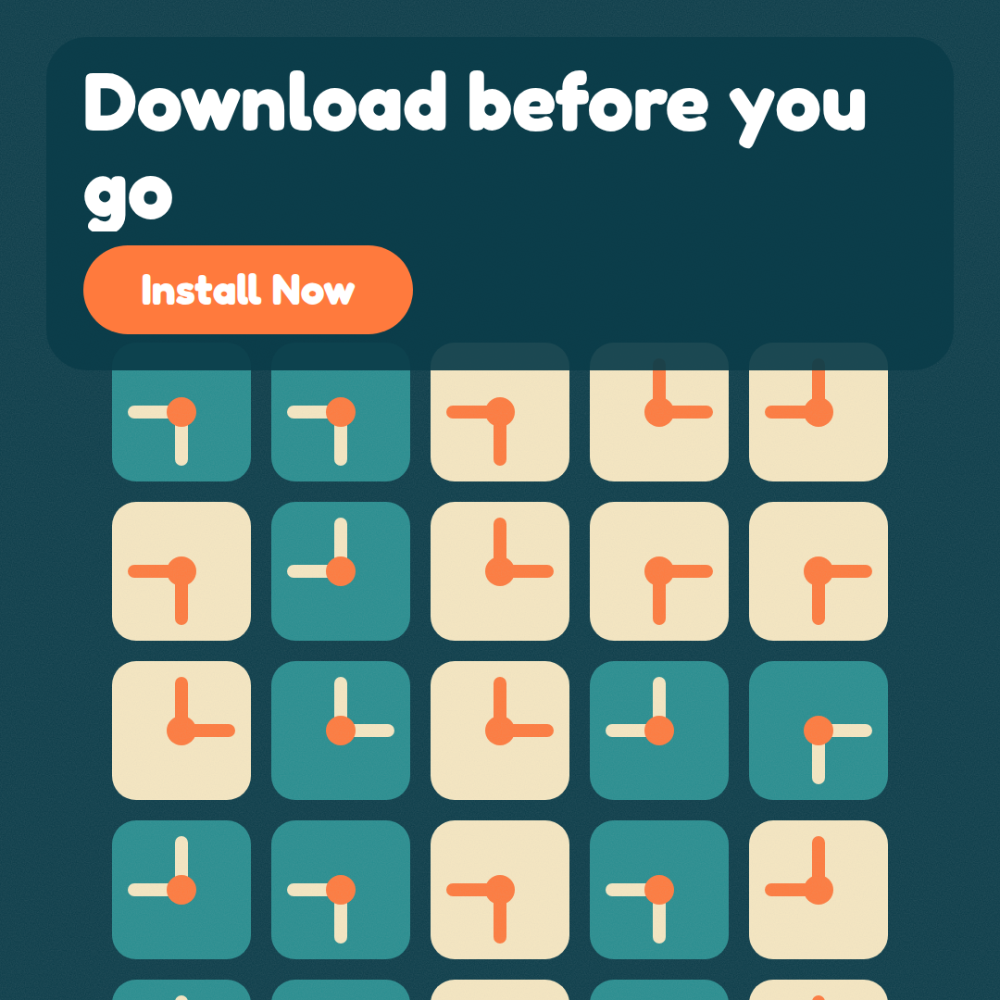
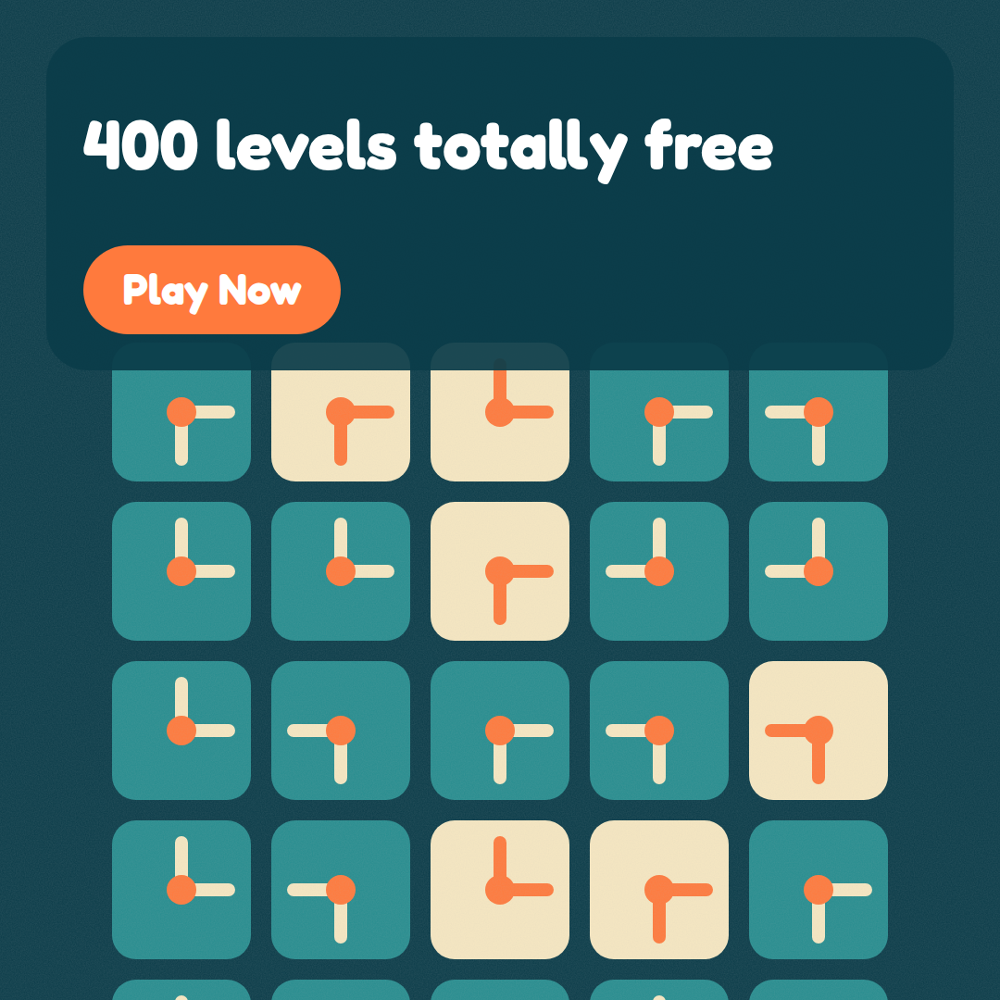
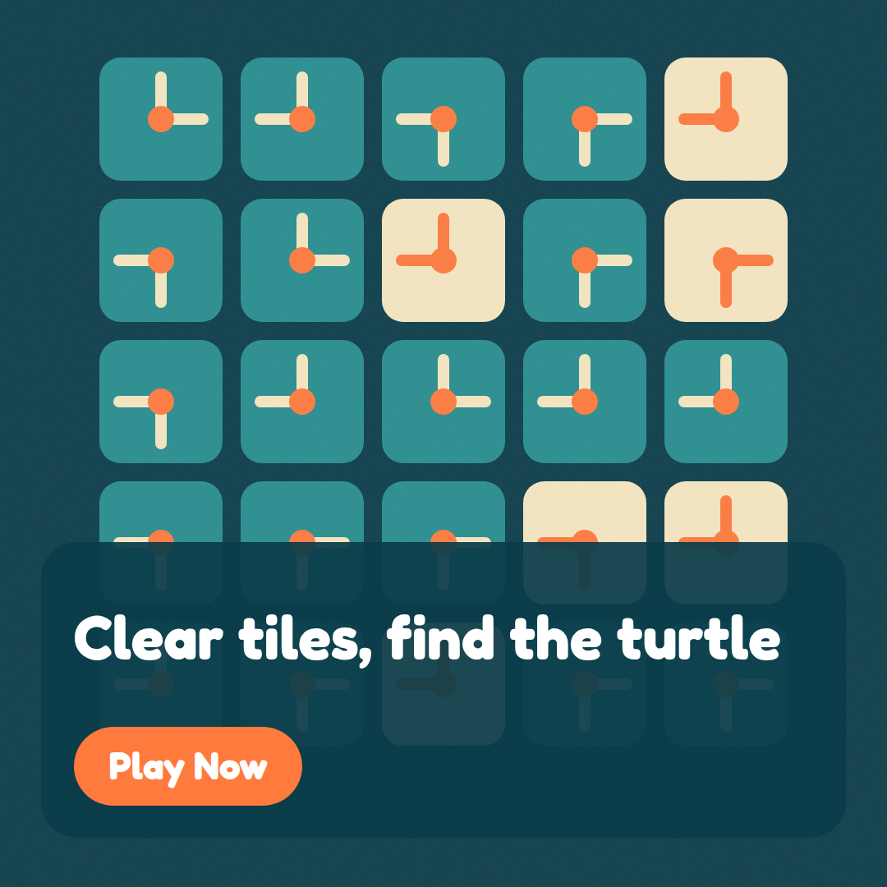

Tidebreak: contact sheet
Fictional product, synthetic demo. Run tidebreak-20261024-021544, mode full, image backend svg-fallback, cost USD 0.3376.
Top picks

Score 7.3. Strongest on legibility (9). The image is highly legible, with a bold white headline on a dark teal panel and a clear orange CTA, and it is policy-safe. However, it is only a loose fit for the 'bright watercolor ocean' brief: the flat vector balloon or lollipop shapes feel like rain or trees, not sea glass, tide pools, or turtles. It also shows nothing of the '400 levels' claim. Audience: Free-to-play value seekers.

Score 7.2. Strongest on legibility (9). The text is highly legible, with white rounded type on a dark panel and a clear orange CTA, and it is policy-safe. However, the concentric dashed orbit rings with dots read as a space or atom motif rather than a bright watercolor ocean. It has no sea glass, tide pool, or turtles, and the palette is dominated by dark teal. The result is a weak brand and art-style fit and only a partial match to the 'free puzzle game' headline. Audience: Free-to-play value seekers.

Score 7.1. Strongest on legibility (9). The text is clear and high-contrast with a strong orange CTA, and the offline message is supported by the headline. The concentric-orbit visual looks like a space or solar system and not a watercolor ocean, with no sea glass, tide pool, or turtles, so brand fit and message support are only moderate. Audience: Offline-first commuters and travelers.

Score 6.55. Strongest on legibility (8). The text is clear and the CTA is strong, but the abstract glowing-rings visual looks more like a space or orbit scene than a bright watercolor ocean. It shows no sea glass, tiles, swapping or turtles, so it only weakly supports the headline and gives a vague picture of the game. Audience: Satisfying-visuals scrollers.

Score 6.45. Strongest on legibility (8). The text is clean and readable, and the palette is on brand, but the flat vector sunburst looks nothing like a watercolor ocean. It has no tide pool, sea glass or turtle imagery, so it only loosely supports the 'bright tide pool' headline. The 'Play Now' button also looks like fake UI, and the two headlines compete. Audience: Satisfying-visuals scrollers.

Score 5.95. Strongest on legibility (8). The text is clear and the CTA is prominent, but the image copy conflicts with the running headline. The visuals are flat, balloon-like ovals on dark teal rather than watercolor ocean scenery, and they show no sea glass, tide pools, or turtles, so brand fit and message match are weak. Audience: Offline-first commuters and travelers.
Not selected


